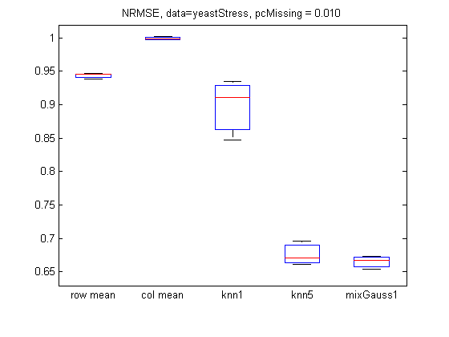
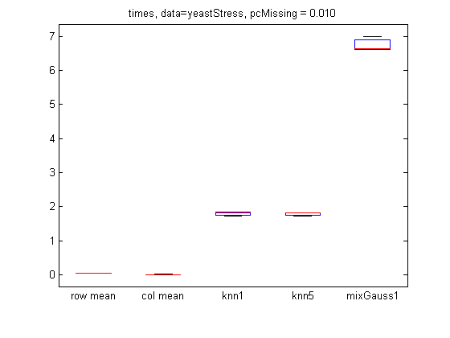
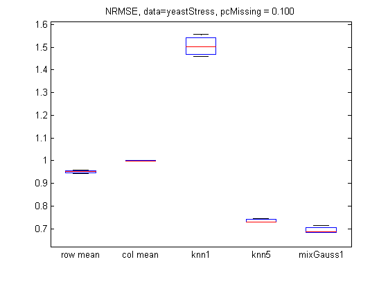
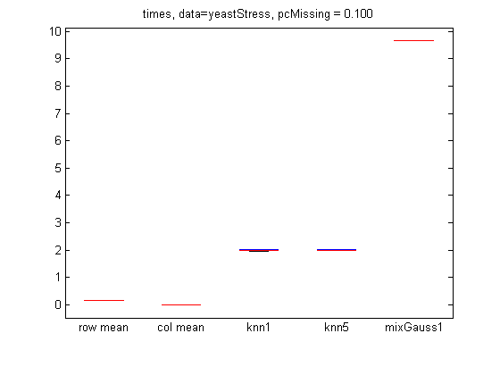
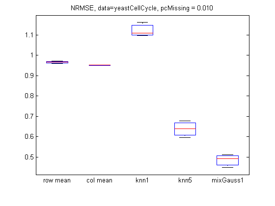
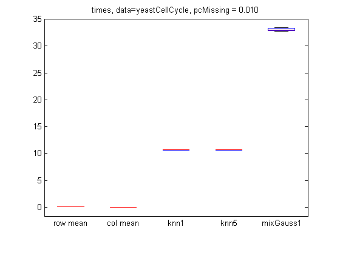
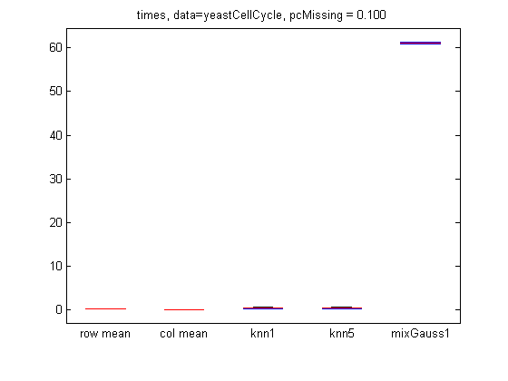

Contents
function [] = imputationGeneMicroarrayDemo()
datasets = {'yeastStress', 'yeastCellCycle'};
for di=1:length(datasets)
dataName = datasets{di};
load(dataName)
if strcmpi(dataName, 'yeastStress')
ndx = [45 53 68 70 74 82 89 95 98 99 104 117 158 165 145];
X = X(:,ndx);
end
nomissing = any(isnan(X),2) == 0;
X = X(nomissing, :);
fprintf('%s, num fully observed rows %d\n', dataName, sum(nomissing));
setseed(0);
[N, D] = size(X);
pc = [0.01, 0.1];
ntrials = 3;
opts = {'verbose', true, 'doMAP', true};
methodNames = {'row mean', 'col mean', 'knn1', 'knn5', 'mixGauss1'};
imputeFns = {@imputeRows, @imputeColumns, @(X)imputeKnn(X, 1), @(X)imputeKnn(X, 5), ...
@(X)imputeMixGauss(X, 1, opts{:})};
nMethod = length(methodNames);
yeastStress, num fully observed rows 5338
yeastCellCycle, num fully observed rows 3222
For each percentage of missing, do several trials
for pidx = 1:length(pc)
errors = zeros(ntrials, nMethod);
times = zeros(ntrials, nMethod);
for trial = 1:ntrials
missing = rand(N,D) < pc(pidx);
Xmiss = X;
Xmiss(missing) = NaN;
for method = 1:nMethod
fn = imputeFns{method};
tic
fprintf('p %3.5f, trial %d, method %s\n', pc(pidx), trial, methodNames{method});
Ximpute = fn(Xmiss);
t=toc;
times(trial, method) = t;
errors(trial, method) = NRMSE(X, Ximpute, missing);
end
end
p 0.01000, trial 1, method row mean
p 0.01000, trial 1, method col mean
p 0.01000, trial 1, method knn1
p 0.01000, trial 1, method knn5
p 0.01000, trial 1, method mixGauss1
1: LL = -107650.235
2: LL = -58709.590
3: LL = -58596.099
4: LL = -58595.981
p 0.01000, trial 2, method row mean
p 0.01000, trial 2, method col mean
p 0.01000, trial 2, method knn1
p 0.01000, trial 2, method knn5
p 0.01000, trial 2, method mixGauss1
1: LL = -157503.899
2: LL = -58850.409
3: LL = -58560.068
4: LL = -58559.876
p 0.01000, trial 3, method row mean
p 0.01000, trial 3, method col mean
p 0.01000, trial 3, method knn1
p 0.01000, trial 3, method knn5
p 0.01000, trial 3, method mixGauss1
1: LL = -78868.035
2: LL = -58606.242
3: LL = -58558.507
p 0.10000, trial 1, method row mean
p 0.10000, trial 1, method col mean
p 0.10000, trial 1, method knn1
p 0.10000, trial 1, method knn5
p 0.10000, trial 1, method mixGauss1
1: LL = -107172.908
2: LL = -63602.811
3: LL = -60960.160
4: LL = -60786.586
5: LL = -60776.409
p 0.10000, trial 2, method row mean
p 0.10000, trial 2, method col mean
p 0.10000, trial 2, method knn1
p 0.10000, trial 2, method knn5
p 0.10000, trial 2, method mixGauss1
1: LL = -85246.120
2: LL = -62543.548
3: LL = -60967.759
4: LL = -60848.302
5: LL = -60838.836
p 0.10000, trial 3, method row mean
p 0.10000, trial 3, method col mean
p 0.10000, trial 3, method knn1
p 0.10000, trial 3, method knn5
p 0.10000, trial 3, method mixGauss1
1: LL = -110166.384
2: LL = -63462.131
3: LL = -60937.430
4: LL = -60782.012
5: LL = -60773.587
p 0.01000, trial 1, method row mean
p 0.01000, trial 1, method col mean
p 0.01000, trial 1, method knn1
p 0.01000, trial 1, method knn5
p 0.01000, trial 1, method mixGauss1
1: LL = -504501.201
2: LL = -49909.783
3: LL = -42455.505
4: LL = -42415.002
p 0.01000, trial 2, method row mean
p 0.01000, trial 2, method col mean
p 0.01000, trial 2, method knn1
p 0.01000, trial 2, method knn5
p 0.01000, trial 2, method mixGauss1
1: LL = -246124.232
2: LL = -44483.946
3: LL = -42251.689
4: LL = -42247.529
p 0.01000, trial 3, method row mean
p 0.01000, trial 3, method col mean
p 0.01000, trial 3, method knn1
p 0.01000, trial 3, method knn5
p 0.01000, trial 3, method mixGauss1
1: LL = -297926.490
2: LL = -43844.364
3: LL = -42246.827
4: LL = -42244.387
p 0.10000, trial 1, method row mean
p 0.10000, trial 1, method col mean
p 0.10000, trial 1, method knn1
p 0.10000, trial 1, method knn5
p 0.10000, trial 1, method mixGauss1
1: LL = -259400.475
2: LL = -87463.475
3: LL = -65201.777
4: LL = -63237.061
5: LL = -63113.462
6: LL = -63103.350
p 0.10000, trial 2, method row mean
p 0.10000, trial 2, method col mean
p 0.10000, trial 2, method knn1
p 0.10000, trial 2, method knn5
p 0.10000, trial 2, method mixGauss1
1: LL = -233678.819
2: LL = -86217.516
3: LL = -65387.039
4: LL = -63271.756
5: LL = -63115.738
6: LL = -63102.009
p 0.10000, trial 3, method row mean
p 0.10000, trial 3, method col mean
p 0.10000, trial 3, method knn1
p 0.10000, trial 3, method knn5
p 0.10000, trial 3, method mixGauss1
1: LL = -229517.992
2: LL = -85320.178
3: LL = -64823.852
4: LL = -62949.815
5: LL = -62822.943
6: LL = -62811.384
Plot
figure;
boxplot(errors, 'labels', methodNames);
title(sprintf('NRMSE, data=%s, pcMissing = %5.3f', dataName, pc(pidx)));
printPmtkFigure(sprintf('imputationGeneError%s%dpc2', dataName, pc(pidx)*100));
figure;
boxplot(times, 'labels', methodNames);
title(sprintf('times, data=%s, pcMissing = %5.3f', dataName, pc(pidx)));
printPmtkFigure(sprintf('imputationGeneTime%s%dpc2', dataName, pc(pidx)*100));
     


end
end
end
function error = NRMSE(Xfull, Ximputed, miss)
idx = find(miss == 1);
numer = (Ximputed(idx) - Xfull(idx)).^2;
denom = (Xfull(idx)).^2;
error = sqrt(sum(numer)) / sqrt(sum(denom));
end